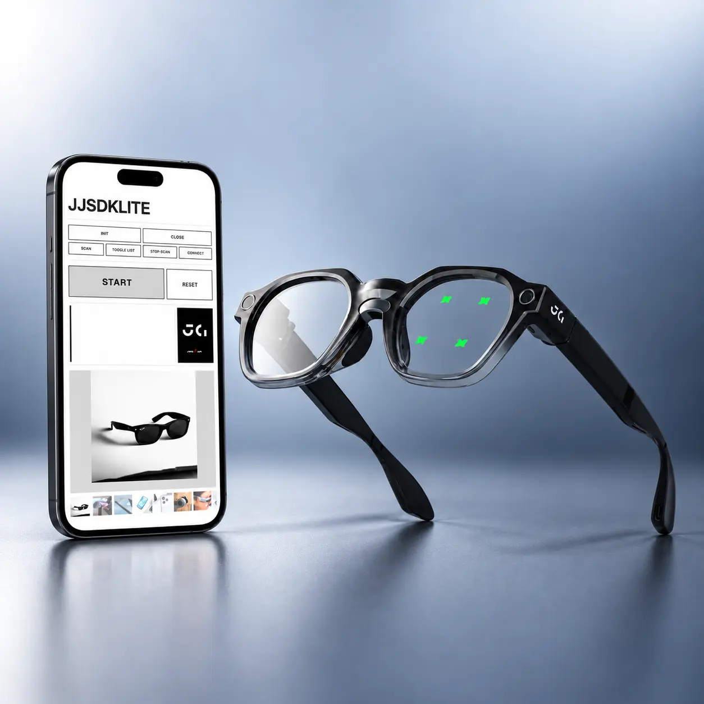

From a one-trick demo to a product partners could build on.
HJ1 was a B2B eye-tracking demo prototype. J9 is the next-generation product — an upgraded processing chip and shared hardware (front-frame camera, eye-tracking module, AI-capable chip, speaker, microphone). The key difference: J9 pairs with a full Android phone system, enabling far more flexible feature planning and interaction design that leverages phone hardware.
J9 also has a clearer commercial goal: a B2B product offering customizable solutions to consumer-facing brands — letting partners freely combine features, adapt interaction modes per scenario, and build their own branded smart glasses applications.
Multiple inputs, two screens, and a product category no one knows yet.
- Integrating multiple input modalities. Eye-dwell selection and eye-triggered photos differ from touchpad or phone controls — the design had to be both easy to learn and able to demonstrate each feature clearly.
- Cross-device visual consistency. Phone and glasses screens differ dramatically in size and input method; keeping one visual language and design system across both was the core visual challenge.
- Interaction architecture division. Phone handles feature selection, glasses handle detailed interaction — the two ends had to complement each other while keeping overall complexity low.
- Building a mental model for a new category. Most partners have little exposure to smart glasses — demo scenarios had to be concrete enough to make the features tangible.
The problem was learnability, not features.
The core question: how do we help users quickly grasp eye-tracking operation and switch fluidly between the App and the glasses? Two principles came out of it and guided every later decision — the phone handles function-level selection while the glasses handle detailed interaction, and new eye-tracking behaviors are anchored as close as possible to users' existing instincts.
Familiar patterns on the phone; the glasses do the precise work.
- App — pairing modeled on Bluetooth. Users step through a linear, familiar click sequence until pairing is confirmed, minimizing the learning curve.
- App — feature menu as a vertical list, not a 2×2 grid. The four glasses-side features sit in a single vertical column. This follows J9's input logic — eye-dwell is primary, touchpad secondary: a vertical layout gives each option enough space for comfortable gaze targeting, while a 2×2 grid would complicate horizontal touchpad navigation and hide eye tracking's advantage.
- Glasses — a camera that feels like a phone's. Users already know phone cameras, so the glasses camera uses the same logic: a circular shutter at the bottom, triggered by eye-dwell. But there's a parallax gap between the front-frame camera and the user's eyes, so the viewfinder doesn't match what's captured — I designed a 3-2-1 countdown after the trigger, letting the user confirm the frame before the photo is taken, turning a hardware constraint into an intuitive confirmation step.
- One Design System across both devices. A unified system spans App and glasses UI — consistent visual language, color, and type hierarchy — then each device adapts for its screen size and input method, so users never feel a disconnect when switching between the two. (The four glasses functions: photo gallery, camera, AI translation, and ECD electrochromic lens control.)
Validated in testing, refined across four iterations.
Internal usability testing combined with exhibition user testing, across 4 design iterations, continuously refining interaction details.
Lightweight usability testing across the four core functions, as a quantitative baseline for design validity.
Real-world feedback gathered through exhibition user testing; each iteration focused on improving interaction precision and flattening the learning curve. The project is still in active development, with design and engineering advancing in parallel.
The biggest shift from HJ1 was moving from "demonstrate one thing" to "integrate many." A demo succeeds when nothing interrupts the flow; a product has to be learned, remembered, and operated flexibly across contexts — which makes the relationships between features, the division of labor between App and glasses, and the overall learning curve the real design work. For emerging hardware, continuous iteration is the design: not a perfect first version, but finding the next most important thing to improve each round.